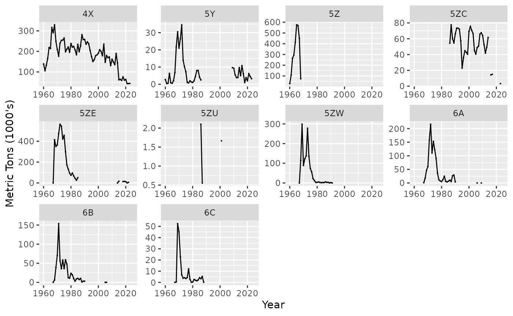
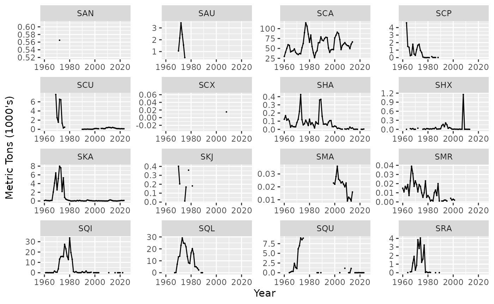
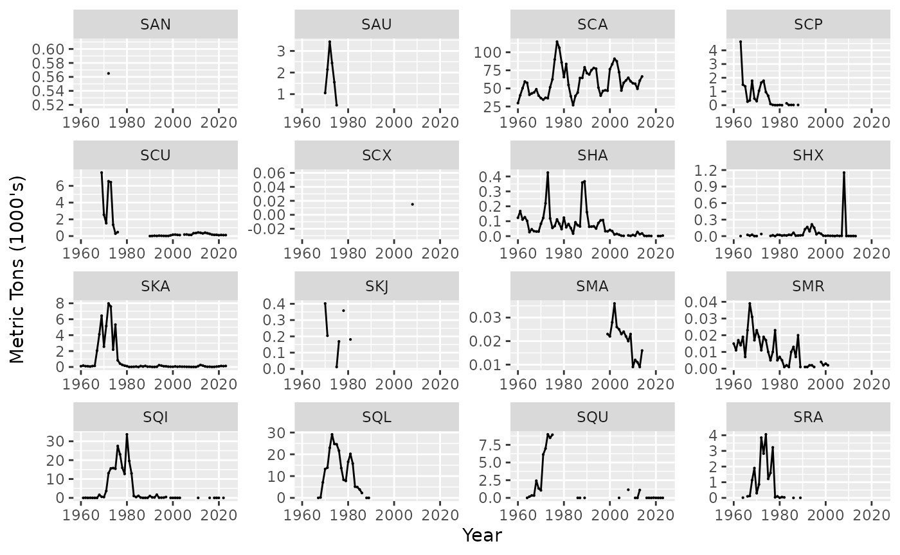
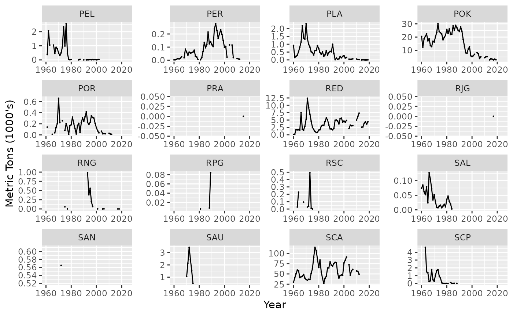
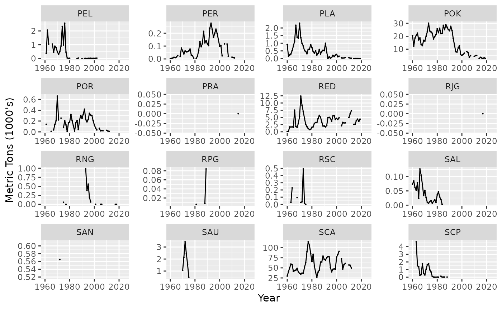

Compare NAFO 21A & 21B databases
Source:vignettes/ForeignCatchCompare21A21B.Rmd
ForeignCatchCompare21A21B.RmdNorthwest Atlantic Fisheries Organization (NAFO)
Data stored on the NAFO’s site is stored in the STATLANT 21 database and is served to the user in one of two formats. The differences are explained here package.
Spatial Domain
The NAFO spatial domain “covers a large portion of the Atlantic
Ocean, including the 200-mile zones of Coastal States — Canada,
Greenland, St. Pierre et Miquelon and USA.”. The R package comlandr
focuses on the Northeast United States (NEUS) shown by the fisheries
statistcal areas as defined by the Greater Atlantic Regional Fisheries
Office (GARFO).
The NAFO divisions that map to the NEUS domain are shown in the second
panel.

The remainder of this document and all following figures will be based on this smaller area.
Catch by Division
Catch by the USA is reported and stored in the NEFSC databases. Prior to NAFO database comparisons all catch by the USA is removed. Catch from divisions 4X, 5Y, 5Z, 6A, 6B, 6C (NEUS equivalent) area used. Aggregated over Country and Species


Catch by Species
Aggregate over division, country


 

 
